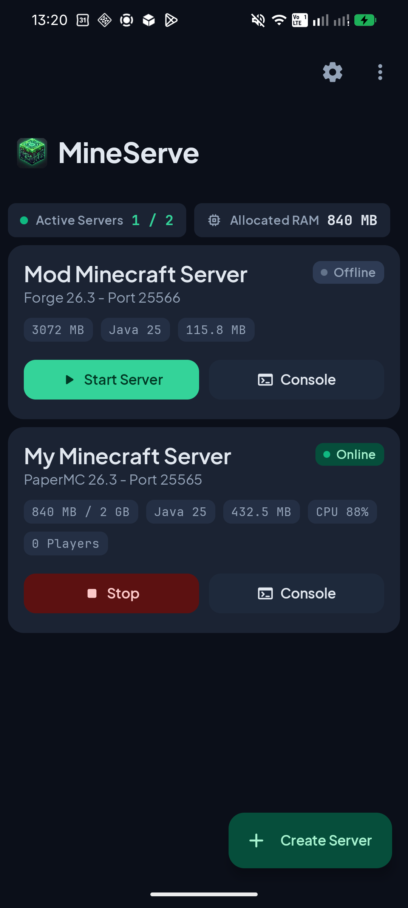

Full Web Remote Admin
Manage console, files, players, backups, plugins, world tools, cloud snapshots, safeguards, and diagnostics from any desktop or tablet browser.
Turn any Android phone or tablet into a full-featured Paper, Purpur, Folia, Fabric, Forge, NeoForge, Bedrock, or Vanilla Minecraft server. No root required, zero ads, and full desktop Web Remote Admin included.
Built from the ground up with a rootless PRoot engine, full Web Remote Admin, and mobile-first reliability.
Manage console, files, players, backups, plugins, world tools, cloud snapshots, safeguards, and diagnostics from any desktop or tablet browser.
Pre-generate chunks around spawn using Chunky or native /forceload stepping, inspect .mca region files by size, and prune uninhabited chunks.
Start or stop your primary server from a Home Screen widget or Quick Settings tile, with automatic low-battery and thermal shutdown protection.
Capture redacted logcat output, run 1-tap DNS, TCP, UPnP, and cloud health self-tests, and export shareable .zip diagnostic bundles.
Connect friends with built-in Bore tunnels, Playit.gg, automatic UPnP / NAT-PMP router port forwarding, or optional MineServe Cloud subdomains.
Install plugins and mods from Modrinth, import .mrpack modpacks, and schedule automated backups to local storage, WebDAV/Nextcloud, or R2 Cloud.
Broadcast server start, stop, crash alerts, player join/leave notices with skins, and backup status directly to Discord with zero plugins.
Ubuntu rootfs and server JAR downloads stay active in the background, resume after interruptions, and support importing local .tar.gz or .jar files.
Run native Bedrock Dedicated Server (Beta) or link multi-server Java networks through Velocity and BungeeCord proxies on one device.
The MineServe app is 100% free and open source forever. Upgrade only if you want dedicated low-latency relay subdomains and off-device Cloudflare R2 cloud backups.
Local device hosting
Everything in Free, plus:
*.play.mineserve.app addressEverything in Plus, plus:
*.playms.uk addresses (e.g. smp.playms.uk)Explore the Jetpack Compose interface built specifically for managing servers comfortably on Android.

Run anything from lightweight Vanilla worlds to modded Forge/Fabric packs, Bedrock BDS, and multi-server proxies.